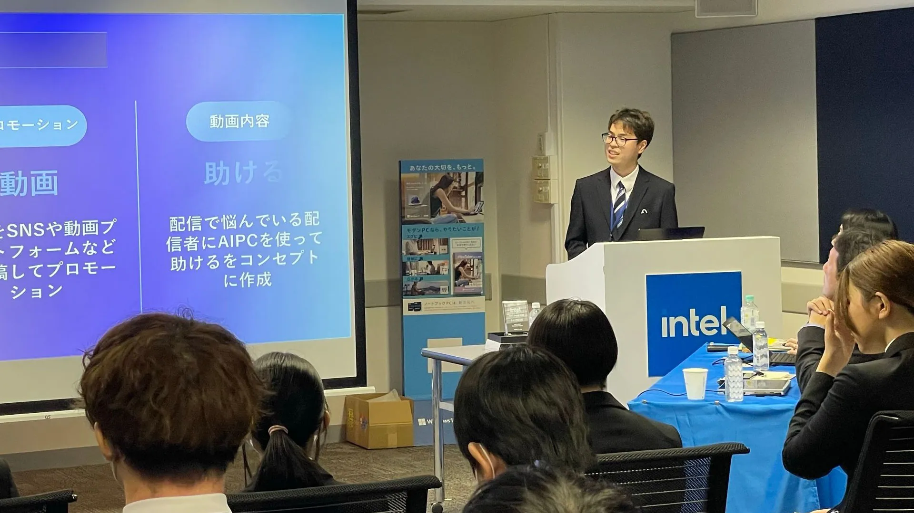
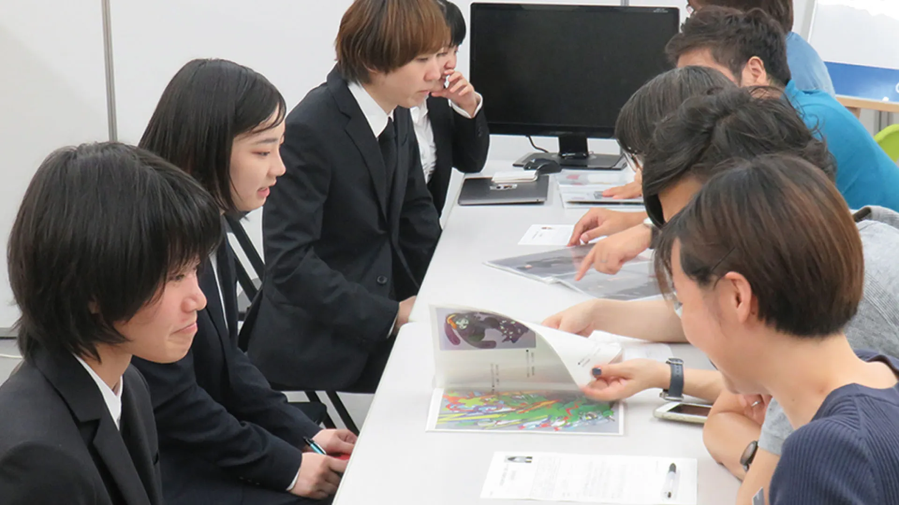
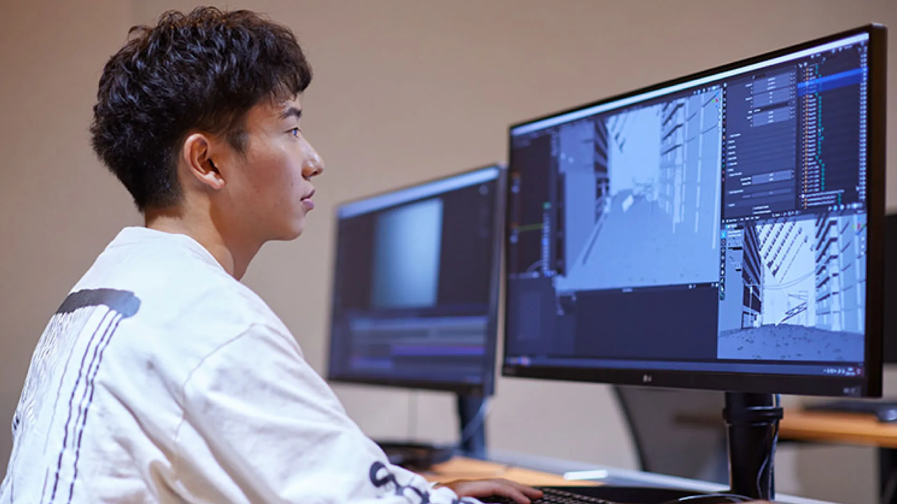
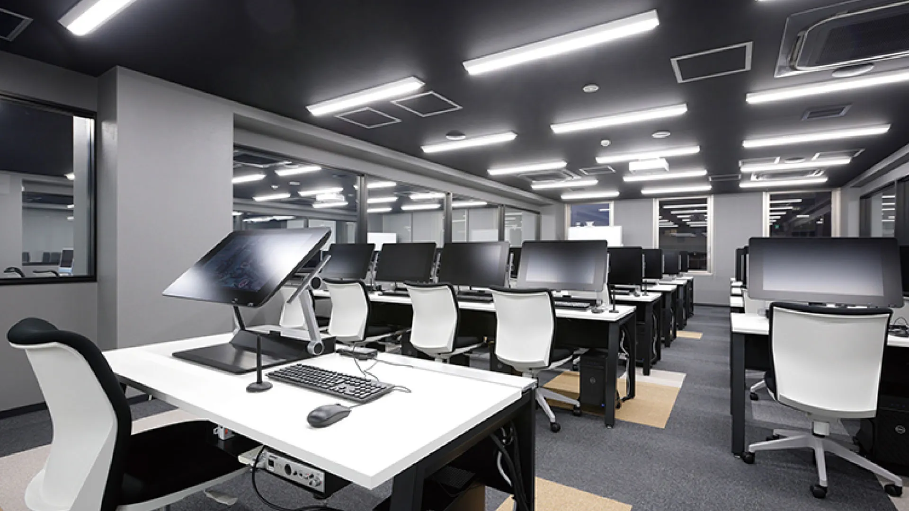

京都テックについて
京都デザイン&テクノロジー専門学校 (京都テック) は、デザインと最先端テクノロジーが学べる、京都市内の学校です。
京都で唯一、esportsやホワイトハッカーの専攻を設置している学校で、他にもCG系やIT系など5つのワールド、19専攻を設置しています。
学内は、8階建てになっていて、エレベーター完備はもちろん、8階にはプロが使うようなゲームスタジオがあります。
8Fゲームスタジオ
5つの特徴
-
企業プロジェクト
京都TECHには、企業プロジェクトというものがあります。
この制度は、実際に企業様から課題を頂いて制作するというプロジェクトです。
これにより、学ぶだけではなく考える力や、実践力をつけることができます。(参加は任意) -
合同企業説明会・単独企業説明会
京都TECHでは、学内に企業様をお呼びして、合同企業説明会・単独企業説明会を定期的に行っています。
業界企業に直接作品を見て頂けるので、スキルをアピールできる機会にもなります。
実際に、この場から多くの先輩が内定を頂いています。 -
Wメジャーカリキュラム
京都TECHには、Wメジャーカリキュラムというものがあります。
この制度は、在籍している専攻以外の講義を、空きコマを利用して受講できる制度です。
京都TECHではこの制度を追加料金なしで利用でき、多くの学生がこの制度を利用しています。 -
現場のプロから学べる
京都TECHの講師は、現役で働きながら指導をされている方が多いです。
なので、「現場では何がよく使われる」などの今の現場の情報を得ることもできます。 -
工夫された座席配置
京都TECHの教室は、上記画像のように講師席が1番後ろにあり、生徒PC画面などを講師が確認しやすいようになっています。
専攻一覧
-
AI・IT・ロボットワールド
専攻名 年数 スーパーAIエンジニア専攻 4年 ホワイトハッカー専攻 4年 AI・ロボット専攻 4年 スーパーITエンジニア専攻 4年 ITプログラマー専攻 3年